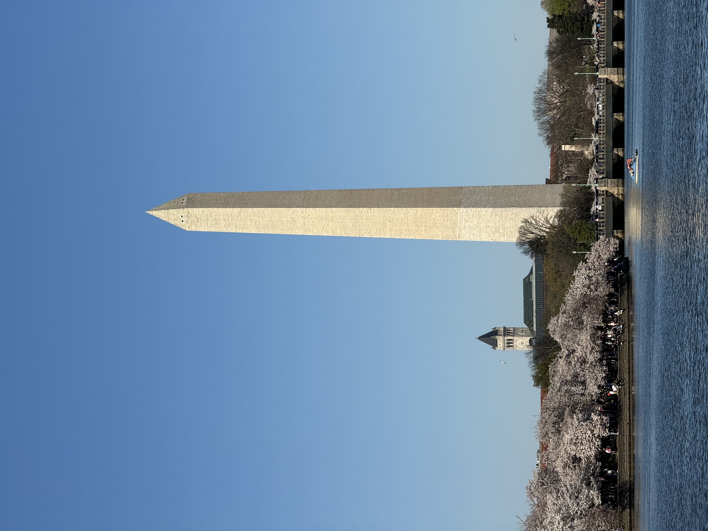

Washington DC's Iconic Landmarks
Here's a visit to Washington DC's landmarks that shows two sides of the capital city. Through the Washington Monument, Jefferson Memorial, White House, and Capitol Building, we see DC's role in American democracy. The National Zoo reminds us that DC is also a welcoming city where history and daily life come together, making it a place for everyone to learn and enjoy.
1 / 5

The Washington Monument rises at the heart of DC, its tall obelisk mirrors in the Tidal Basin, surrounded by beautiful cherry blossoms in spring.
Photo by Fei Peng © 2024